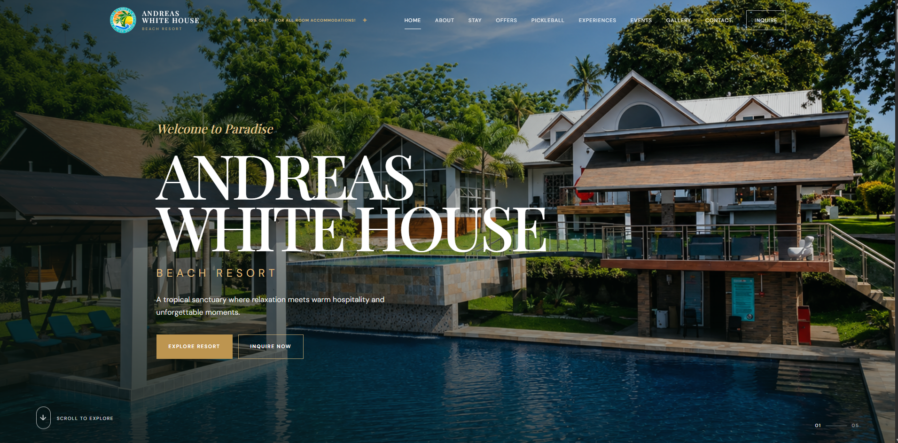
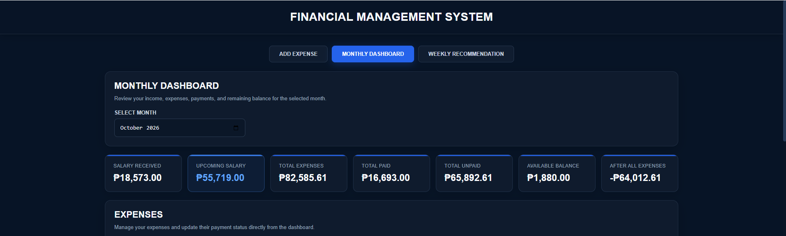
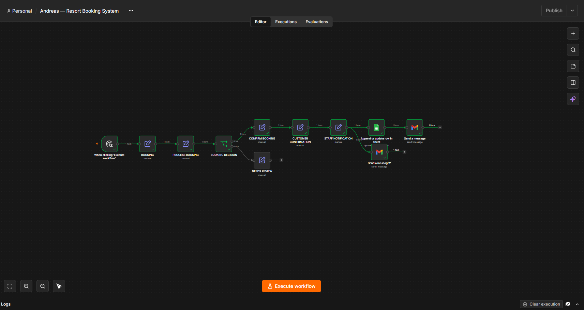
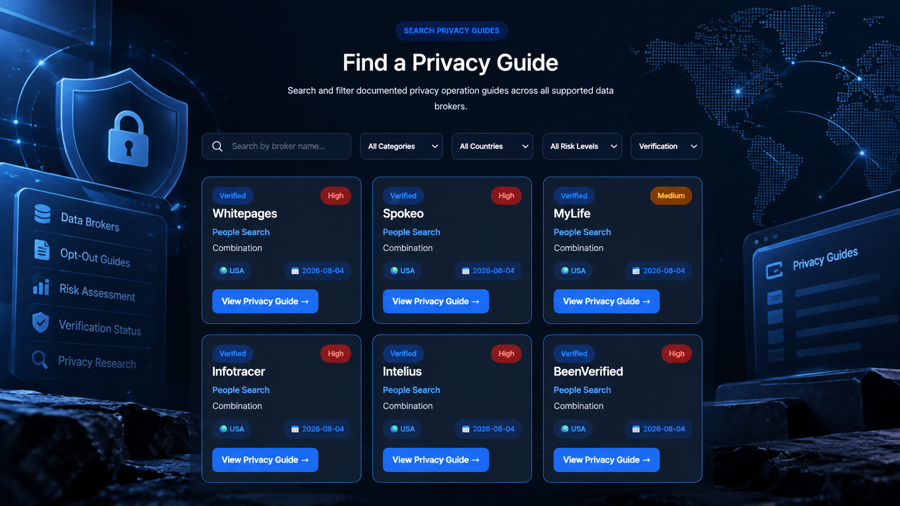
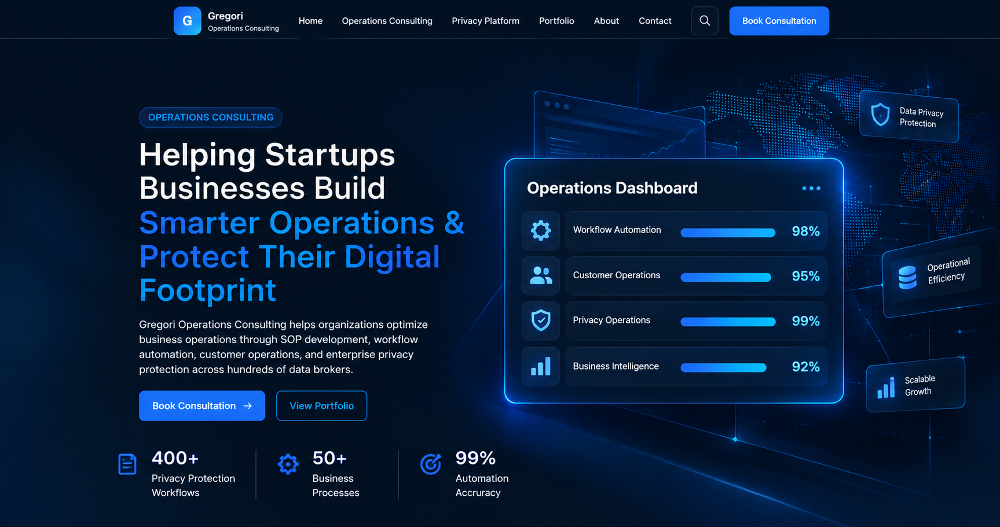
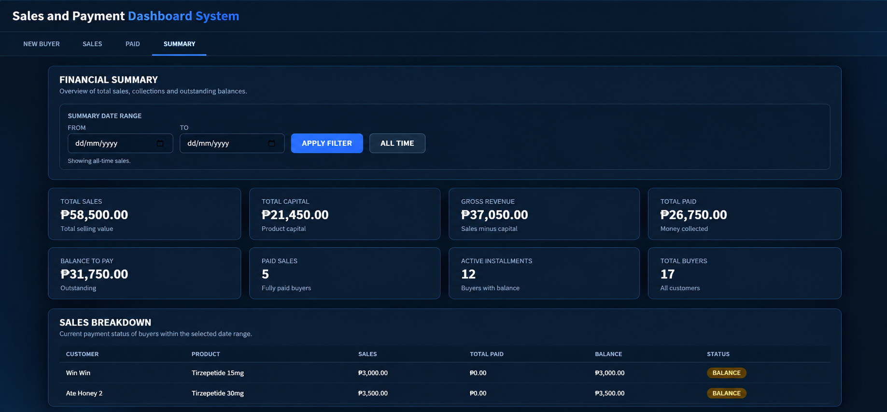

Administrative Support
Data entry, document organization, email management, research, records maintenance, and routine operational assistance.
I combine privacy operations, process improvement, administrative support, and practical digital development to help teams organize information, investigate complex issues, improve repeatable workflows, and reduce manual work.
A multidisciplinary professional combining privacy operations, process improvement, and practical digital solutions.
My professional background spans privacy and cybersecurity operations, data broker research, legal administration, airport operations support, customer service, and digital project development. These experiences have strengthened my ability to investigate complex issues, manage sensitive information, document processes, and support teams in maintaining efficient and reliable operations.
At Optery, I work in privacy operations, focusing on researching data broker opt-out procedures, monitoring removal workflows and automation-related issues, maintaining process documentation, and supporting escalations involving legal and development teams. My role requires analytical thinking, attention to detail, and a consistent commitment to handling privacy-related processes accurately and responsibly.
Beyond my current role, I develop practical digital solutions using web technologies and Google Workspace tools, with a growing focus on workflow automation through n8n and responsible AI-assisted processes. I am particularly interested in identifying repetitive tasks, improving information management, and creating organized systems that make everyday work more efficient.
I approach each task with a commitment to accuracy, confidentiality, clear documentation, effective communication, and continuous improvement. By combining structured problem-solving with technical adaptability, I aim to help organizations strengthen their processes, reduce unnecessary manual work, and build more reliable digital operations.
Flexible support for small businesses, teams, and independent professionals.
Data entry, document organization, email management, research, records maintenance, and routine operational assistance.
Experience assisting with document preparation, organizing case files, drafting routine legal documents, and research support.
Data broker research, personal data exposure review, opt-out process documentation, and privacy-removal workflow support.
Practical automation for repetitive tasks, form submissions, notifications, and data movement across connected tools.
Responsive websites and lightweight web applications, including booking forms, dashboards, and admin workflows.
Customer communication, inquiry tracking, information updates, follow-ups, and structured support processes.
Privacy operations, data broker research, legal support, and operational coordination.
Supported privacy operations, system integrity, security compliance, and performance-related improvements through data broker investigation and workflow analysis.
Maintained visibility into data broker opt-out processes, removal behavior, automation limitations, and the quality of personal data exposure reports.
Researched alternative opt-out approaches for difficult data brokers and documented procedures for operational use.
Supported day-to-day airport operations monitoring, reporting, records management, and coordination in an aviation environment.
Provided remote administrative and document support for a lawyer.
Supported law office administration, client service, appointment scheduling, and legal documentation.
A broad toolkit spanning operations, privacy, digital systems, research, and business support.
Using AI as an assistive tool for research, development, documentation, and process improvement, with human review.
AI can accelerate drafting, analysis, and prototyping, but outputs require validation before operational use. Sensitive or confidential information should not be entered into AI tools unless the tool and workflow are approved for that data.
Add your own project screenshots to the assets/projects folder when you're ready.

⌂Responsive resort website and booking experience with accommodation information, booking forms, inquiry handling, and an administrative foundation.

▥Dashboard concept for tracking cash inflow, expenses, debt, payment status, due dates, and available cash.

⇄Workflow design exploring how form submissions and spreadsheet records can trigger email notifications and record updates.

◈A structured privacy operations resource concept for organizing broker profiles, risk indicators, removal difficulty, and opt-out guidance. Public examples should use synthetic data.

⌘A professional online presence for operations support, privacy operations, workflow automation, and digital services.

▧Application concept for recording sales, calculating installment balances, tracking payments, and separating paid records from outstanding balances.
We can add a separate project-details page later and link each project card to its detailed case study.
The problem-solving approach behind the work.
Challenge: Data brokers use different opt-out requirements. Approach: Research, document, and categorize procedures. Value: Clearer instructions and more repeatable workflows.
Challenge: Inquiries can be missed when they require manual checking. Approach: Structure form submissions and connect notifications and admin views. Value: More visible requests and clearer follow-up.
Challenge: Expenses and due dates can be hard to track across separate records. Approach: Organize records and calculate totals in a dashboard. Value: A clearer view of upcoming obligations and available cash.
Challenge: Copying information and updating records repeatedly consumes time. Approach: Map the steps and identify suitable automation triggers. Value: Fewer manual steps and more consistent processes.
Client feedback and recommendations.

Add Hideko's approved testimonial here before publishing this endorsement.

Replace with a genuine, approved client testimonial.

Replace with a genuine, approved client testimonial.
These are placeholders. Add real testimonials, ratings, names, and photos only with each person's permission.
I'm open to discussing part-time, remote, and project-based opportunities.